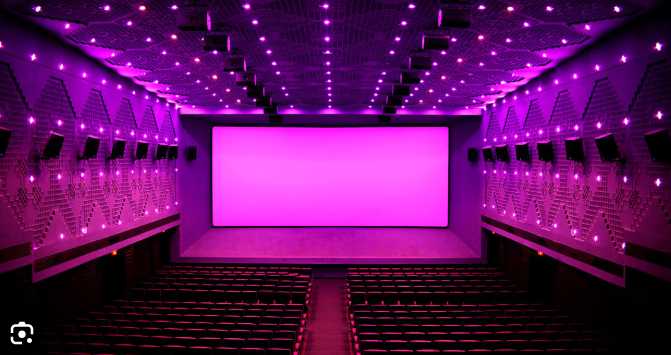

Rohini
Theatre

🎬 Rohini Theatre -A Cinematic Landmark in Chennai
✨ Highlights:
- 🎟️ Iconic Multiplex: Established in 1991, Rohini Silver Screens became India's first 6-screen multiplex in 1999.
- 🍿 Fan-Centric Experience: Known for its vibrant fan celebrations during first-day first shows (FDFS), complete with DJ counters and cut-outs.
- 🎥 Advanced Technology: Features Dolby Atmos sound systems, 4K projection, and luxurious seating imported from Mumbai.
- 📅 Show Timings: Offers a variety of screenings, including early morning shows for major releases.